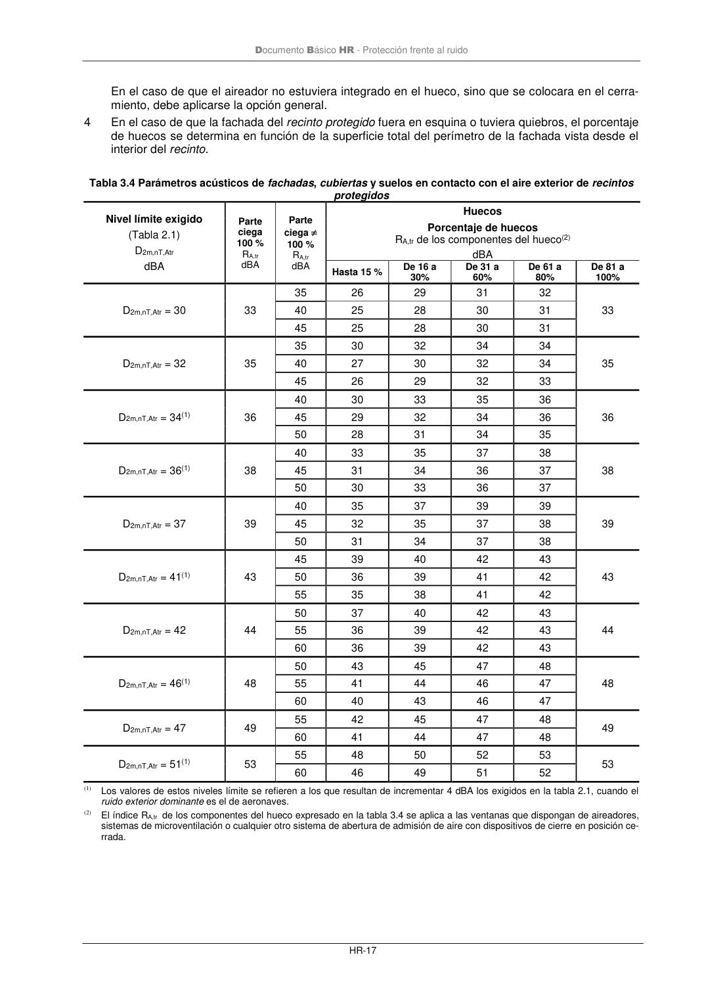

DB-HR · Página 23 · versión 2019-12-20
SHA256: a67baeca5138bb1f121f797d23a79a4557bd9ac4abacd954024893e05411eeab · página física 23 de 80 · métodos de encabezado
solo si están cotejados.
Formatos: Markdown · JSON de bloques · PDF p. 23 · imagen PNG
Documento Básico HR - Protección frente al ruido HR-17 En el caso de que el aireador no estuviera integrado en el hueco, sino que se colocara en el cerra- miento, debe aplicarse la opción general. 4 En el caso de que la fachada del recinto protegido fuera en esquina o tuviera quiebros, el porcentaje de huecos se determina en función de la superficie total del perímetro de la fachada vista desde el interior del recinto. Tabla 3.4 Parámetros acústicos de fachadas, cubiertas y suelos en contacto con el aire exterior de recintos protegidos Nivel límite exigido (Tabla 2.1) D2m,nT,Atr dBA Parte ciega 100 % RA,tr dBA Parte ciega 100 % RA,tr dBA Huecos Porcentaje de huecos RA,tr de los componentes del hueco(2) dBA Hasta 15 % De 16 a 30% De 31 a 60% De 61 a 80% De 81 a 100% D2m,nT,Atr = 30 33 35 26 29 31 32 33 40 25 28 30 31 45 25 28 30 31 D2m,nT,Atr = 32 35 35 30 32 34 34 35 40 27 30 32 34 45 26 29 32 33 D2m,nT,Atr = 34(1) 36 40 30 33 35 36 36 45 29 32 34 36 50 28 31 34 35 D2m,nT,Atr = 36(1) 38 40 33 35 37 38 38 45 31 34 36 37 50 30 33 36 37 D2m,nT,Atr = 37 39 40 35 37 39 39 39 45 32 35 37 38 50 31 34 37 38 D2m,nT,Atr = 41(1) 43 45 39 40 42 43 43 50 36 39 41 42 55 35 38 41 42 D2m,nT,Atr = 42 44 50 37 40 42 43 44 55 36 39 42 43 60 36 39 42 43 D2m,nT,Atr = 46(1) 48 50 43 45 47 48 48 55 41 44 46 47 60 40 43 46 47 D2m,nT,Atr = 47 49 55 42 45 47 48 49 60 41 44 47 48 D2m,nT,Atr = 51(1) 53 55 48 50 52 53 53 60 46 49 51 52 (1) Los valores de estos niveles límite se refieren a los que resultan de incrementar 4 dBA los exigidos en la tabla 2.1, cuando el ruido exterior dominante es el de aeronaves. (2) El índice RA,tr de los componentes del hueco expresado en la tabla 3.4 se aplica a las ventanas que dispongan de aireadores, sistemas de microventilación o cualquier otro sistema de abertura de admisión de aire con dispositivos de cierre en posición ce- rrada.
